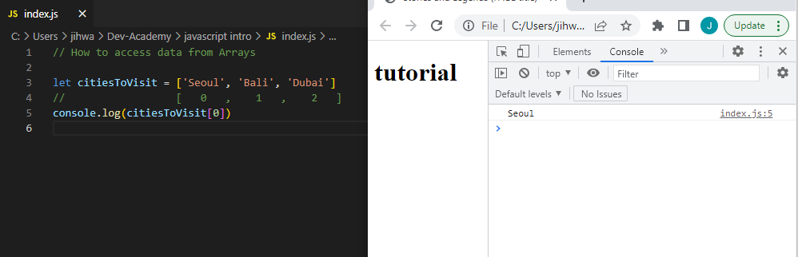

Sprint 3
JavaScript, HTML and CSS
HTML is responsible for the structure of the page itself and the CSS is responsible of the styling. Lastly, JavaScript determines the dynamic and interactive elements on the page. JavaScript will manage things like what happens when users click, hover or type on certain element.
We can picture the relationship they have between eachother by looking at house. For exmaple, if we have a house with 1 large bedroom, 2 living room and 2 bath rooms. This is the HTML of the house. What materials is the house built out of? Brick with wooden floors. The styling of the house corresponds to CSS. And finally, what can you do there? we can eat, watch TV, sleep and so on. The functionality of the house is JavaScript.
Explain control flow and loops using an example process from everyday life:
You can think of control flow like reading a book. Where do we start reading a book? Yes, from the start of the book and so does the computer. It will read code from the first line of code to the last code in order, unless there is a condition that takes place. Just like you skipping certain parts of the book to get to the chapter you desire to read.
Loops in JavaScript is used to perform repeated tasks based on a condition.

Let's have a look at a picture example above and also look at playing musics on playlist. From the picture above we can break the example into three parts. First the initialisation, you having songs available to be played. Then comes the condition, the playlist will keep on playing songs until there are no more to be played or you having shuffle fucntion on, which will shuffle the playlist. Lastly, update expression is like your playlist updating the number of songs availble to be played.
Explain the difference between accessing data from arrays and objects:
Arrays and Objects are data types and we use them to store a collection of data.
To access the data stored in a Array, we use indexes starting 0. This is known as zero-based indexing. For example, if you were to access the first item on Array item you would:

Objects consist of properties and inside a property there's a 'key' and a 'value'. Object properties can be accessed by using a dot notation.

Explain what functions are and why they are helpful
Fuctions allow you to define a block of code, give it a name and then execute it as many times as you want. They are helpful in a way that they are reuseable, helps with program readability and reduces the chances of error.
Dom:
Document Object Model, is a programming interface that allows us to create, change or remove elements from the document.

This is where JavaScript comes in play. We can use JavaScript to access these elements in the document and make changes.For example, we can select elements in the document by using methods.
querySelector(), this method will return the first matching element. Therefore, if you are looking for more than one element and wish to return a list of all matching element you will want to use uerySelectorAll().